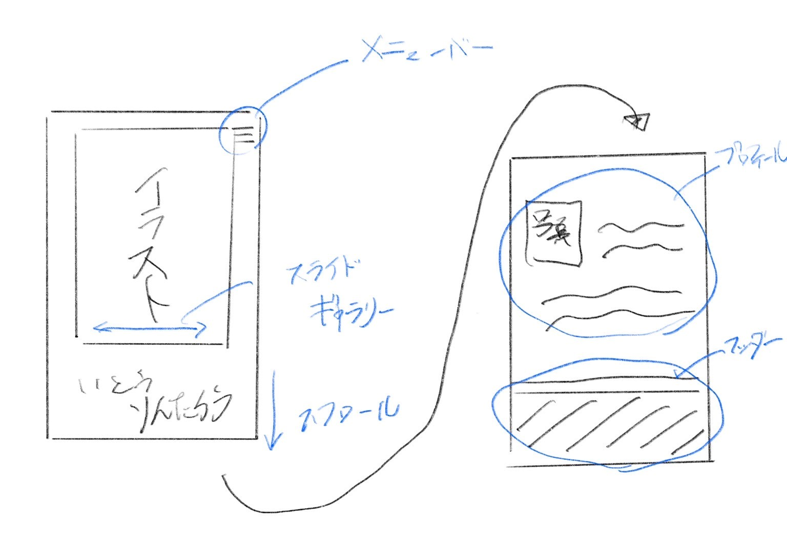
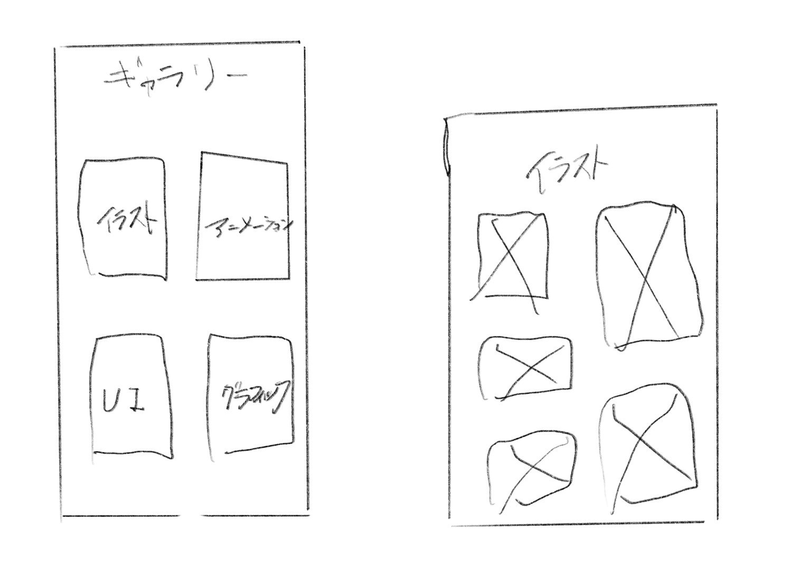

全体概要
ヒアリング
Q.イラストからアニメ制作まで取り組んでいるけど、どういった目的のために作りたいの？
伊藤君「これを通じて仕事を受けるイメージを想定してる。そのために自分の作品や情報を発信していく場所にしたい。」
Q.具体的にイメージしているホームページはあるの？
伊藤君「好みの雰囲気や気になるトランジションはある。白黒でシンプルだけど、ありきたり過ぎないものになったらいいなと思う。」
〈伊藤君セレクト〉
トランジションが良い
Cover
Sss by applibo
シンプルさが良い
kandemono
Q.ウェブページに載せたい情報は何があるの？
伊藤君「今はプロフィール・ギャラリー・コンタクトフォームでいいかな。
Mika Pikazoっていうイラストレーターぐらいの情報量にしたい。」
ワイヤーフレーム
シンプルで３段階構造の大まかなデザインに決まりました。
スライドギャラリーは今後、コミケでるよなどの宣伝になるポスターを配置するイメージ。
それとは別のギャラリーをあえて１枚目に載せない理由は取り組んでいる分野が多いからページをわけたいそう。
お問い合わせはメニューバーやフッターから飛べるようにする。
もっと良いフレームがあるかもしれないが、とりあえずこの形を軸にプロトタイプまで完成させたいと思う。

ヒアリングを終えて
ホームページ制作をするとなると、配置とか文字の大きさ、フォントなどデザインに関わる内容も取り組まなくてはならない
けど、その点はデザインを学んできた伊藤君のほうがよくわかっている。本とかネットにも似た知識はあるけど、
人の感性によって良いものは変わるからデザインは知識だけじゃ良いものは作れない。
ウェブデザインなら、受託者の理想を上手く反映して、利用者にとって使いやすいもを作らなければならない。
今回はデザインの面は伊藤君がバックアップしてくれることになったので、作りたいものと、利用者が使いやすいものを
考えるデザイナーの視点を近くで見れるのは嬉しいです。
自分が目指すのはイメージ通りの制作と、コード側から見たデザイン提案かなと思います。
デザインと関わるための一歩になればいいなと思います。
次は簡単な問い合わせフォームの制作をします。